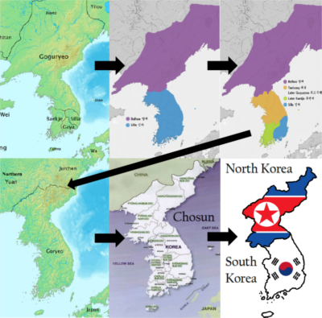

The final period of Korean history was around 1910 til the present which can be split into 2 parts. The first happened during Japan’s imperialist phase where they colonized, pillaged, and took over most of Eastern Asia. Korea was under Japan’s control from 1910 till the end of World War II when US and Soviet armies took the peninsula from Japan. During that time, the people were forced to speak Japanese and were beaten if they did not comply with language regulations. Many rapes by japanese soldiers were covered up by calling them, “comfort women”, and many older Korean women hide the fact their children may have been born to a japanese father. For this reason Korea has very harsh feelings toward anything japanese related but with time hearts are being softened.
The second is that after the Korean war when the United States and Soviet Russia fought for socio political influence over the peninsula. The US already had communist enemies in China and Japan and desired a capitalist ally in the far east. The war lasted years but ended up with the peninsula being divided at the 38th parallel as the North adopted the USSR’s Communism and the South followed the footsteps of the United States. We can see, even after just 60 years of separation that there is a stark difference between the two countries in modern society as South Korea has become the 12th largest economy in the world with the 7th most powerful military and the North is 113th and 18th in those some fields.
Here are some maps to help you visualize the whole breakdown of kingdoms and border changes until modern day.
